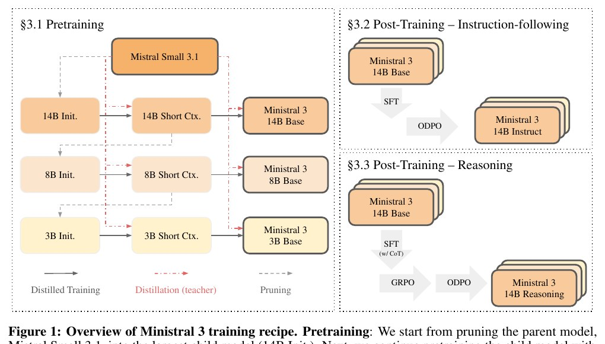
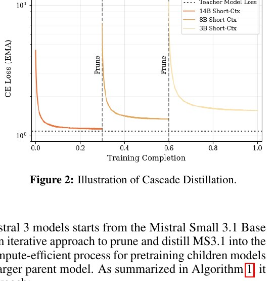
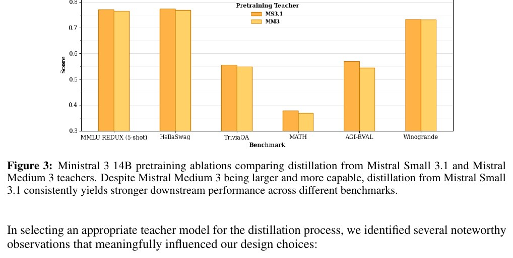
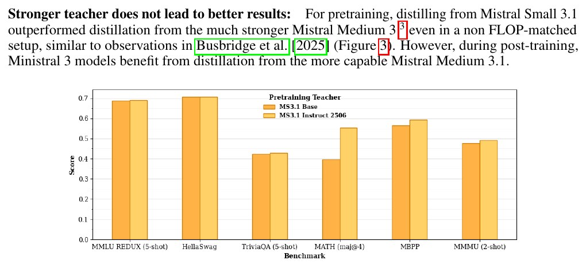
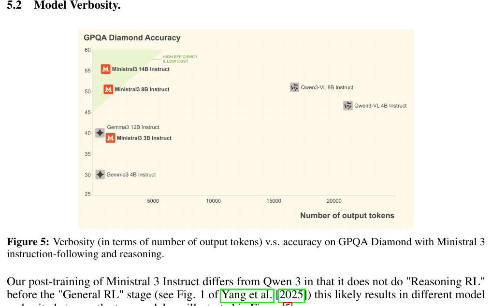
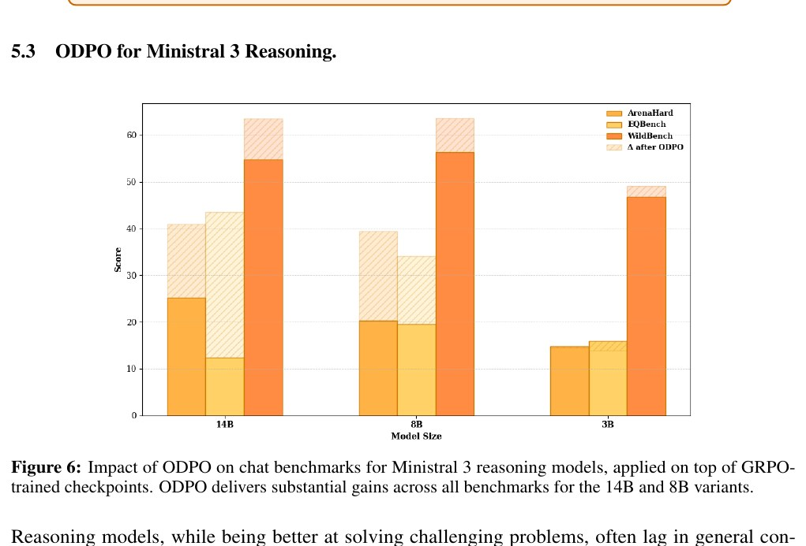

速览
一个父模型，三次剪枝，九个开放权重模型。
五条要点
剪枝 + 蒸馏 = 带剪枝的持续预训练
14B 从 Mistral Small 3.1 剪枝初始化，再以父模型 logits 蒸馏续训；8B 从 14B Short Ctx 剪出，3B 从 8B Short Ctx 剪出图 1 · 算法 1。整条流程一次走完数据，不重复数据§3.1 · 图 2。
剪枝打分很简单
层重要性 = 输出 / 输入激活范数之比（不做 Minitron 那种逐层删掉看 PPL）；隐藏维用全网统一的 PCA 旋转；FFN 按 |SiLU(W1x)·W3x| 均值保留§3.1 · 算法 2。蒸馏只用 forward KL，比调 KL + NTP 的混合系数更好§3.1。
教师怎么选：三条消融
① 预训练阶段 Mistral Medium 3 当教师反而不如 Small 3.1（容量差），后训练阶段则更强的 Medium 更好；② 后训练过的教师比 base 教师好，MATH / 代码收益最大；③ 偏好优化过的教师比只做 SFT 的好§5.1 · 图 3 · 图 4。三条都是复现前人结论§1。
后训练：SFT 蒸馏 + ODPO，推理版加 GRPO
Instruct：fp8 SFT（Medium 3 logit 蒸馏）→ ODPO（采样 T = 0.7，成对奖励模型给软标签）§3.2。Reasoning：CoT SFT → STEM RL → 用 rubric 的 General RL → ODPO（思考段先剥掉再打分）§3.3。
14B 档强，3B 档弱一些
14B Reasoning 在表 5 的 6 项上全部高于 Qwen 3 14B，比如 AIME25 85.0 vs 73.7表 5。3B Instruct 的 Arena Hard 只有 30.5，低于 Gemma3-4B（31.8）和 Qwen3-VL-4B（43.8）表 4。
架构：常规 decoder-only，重点在「怎么来」
结构本身没有新东西。论文的总览图画的是训练配方，所以先看它。

| 模型 | 层数 | 隐藏维 | Q / KV 头 | FFN 维 | 共享 embedding | 上下文 |
|---|---|---|---|---|---|---|
| Ministral 3 14B | 40 | 5120 | 32 / 8 | 16384 | ✗ | 256K |
| Ministral 3 8B | 34 | 4096 | 32 / 8 | 14336 | ✗ | 256K |
| Ministral 3 3B | 26 | 3072 | 32 / 8 | 9216 | ✓ | 256K |
来源表 1。词表都是 131K；父模型 Mistral Small 3.1 的层数和维度原文没给，所以本页算不出每一步剪掉了多少层。3B 共享 embedding 是为了不让 embedding 参数占比过高§2。
示意：依据 §2 文字绘制。图像 token 和文本 token 怎么排布、是否有特殊分隔符，原文没有写，图中只画「都进 LLM」。
相对父模型 / 同类改了什么
- 结构是父模型的「缩小版」：GQA、RoPE、SwiGLU、RMSNorm、YaRN 都是常规选择§2；不同之处在于权重来自对父模型的剪枝，隐藏维剪枝用 PCA 旋转，所以子模型的隐藏空间是父模型的一个主成分子空间§3.1。
- 视觉侧不剪：三个尺寸共用同一个冻结的 410M ViT，只重训投影层§2。这也意味着 3B 模型的视觉编码器参数占比相对更高（3B 这个数字是否包含 ViT，原文没说）。
- 长上下文：除 YaRN 外还用了按位置的 attention softmax 温度缩放（引 Scalable-Softmax 与 Llama 4）§2。
数据：披露得最少的一环
论文讲配方很细，讲数据很粗。下表把能找到的每一条都列出来，找不到的明确写「原文未披露」。没有任何配比数字，所以本节不画比例条。
| 数据 | 已披露内容 | 规模 / 比例 | 来源 |
|---|---|---|---|
| 预训练（Cascade Distillation） | |||
| 预训练语料 | 纯文本 + 图文交错数据的混合；以教师 logits 做蒸馏目标 | 每个模型 1–3T token；来源、语种、领域、文本 / 图文比例 原文未披露 | §1 · §3.1 |
| 数据复用 | 整个级联「一次走完」数据混合，剪枝发生在途中，避免数据重复 | 两次剪枝在训练进度约 0.3 / 0.6 处读图 | §3.1 · 图 2 |
| 短上下文数据 | short_data，窗口 16,384 | token 数 原文未披露 | §3.1 · 算法 1 |
| 长上下文数据 | long_data，窗口从 16,384 扩到 262,144 | 组成与 token 数 原文未披露 | §3.1 |
| 剪枝校准数据 | 「验证集」/「大校准 batch」上的激活，用来算层分数、PCA、FFN 重要性 | 样本量与来源 原文未披露 | §3.1 · 算法 2 |
| Instruct 后训练 | |||
| SFT 数据 | 精选的高质量多模态 + 纯文本指令跟随数据；用 Mistral Medium 3 的 logits 做蒸馏 | 规模、任务构成 原文未披露 | §3.2 · §3.2.1 |
| ODPO 在线偏好对 | 每个 prompt 用当前策略以 T = 0.7 采两条回答，由文本奖励模型 PWRM 排序；出现无限循环的回答直接判负；生成时允许执行工具 | prompt 数 原文未披露 | §3.2.2 |
| PWRM 训练数据 | 结构化成对数据：对话历史 + 两个候选 → 哪个更好 | 规模、标注来源 原文未披露 | §3.2.2 |
| Reasoning 后训练 | |||
| 推理 SFT | 短 CoT（取自通用 SFT 混合）+ 长 CoT 推理轨迹（前面加推理专用 system prompt）；领域：数学、代码、通用对话、指令跟随、多语、工具使用、视觉推理 | 短 / 长比例、轨迹来源 原文未披露 | §3.3.1 |
| 推理 SFT 过滤 | 轻量过滤：格式差、过度重复、不该出现的语言切换 | 过滤率 原文未披露 | §3.3.1 |
| STEM RL | 数学、代码、视觉推理问答对，来自开源与自有来源；按 Magistral 的多步流水线清洗，去掉无效、不完整、过易 / 过难的题 | 题量、难度阈值 原文未披露（细节指向 Magistral 论文） | §3.3.2 |
| General RL | 对通用聊天、指令跟随、开放式推理 prompt 生成原子化评分 rubric；LLM 判官逐条判，奖励 = 满足条目的比例 | prompt 数、rubric 条数 原文未披露 | §3.3.2 |
| Instruct 加长 CoT 实验 | 往 instruct 的 SFT 里掺不同比例的长 CoT + 精选 system prompt | 具体比例 原文未披露；结论只有定性描述 | §5.2 |
Caption / 图像数据 原文几乎没写
预训练里有「图文交错」数据，SFT 里有「多模态指令」数据，推理轨迹和 STEM RL 里有「视觉推理」§3.1 · §3.2 · §3.3。但图像来源、caption 是怎么写的、图文比例，全部没有披露。这篇不能当 caption 方法参考，能借鉴的是过滤和 rubric 的思路（见 §08）。
数据侧真正有信息量的三点 可核对
- 级联不重复数据：大模型训练用过的数据，小模型不会再看一遍§3.1。
- RL 题目按难度两头剪：太易、太难都去掉§3.3.2。
- 通用 RL 不用标量奖励模型，用「每个 prompt 一组原子 rubric + 满足比例」§3.3.2。
训练配方
学习率、batch、步数、各阶段 token 数原文都没给。下面只列原文写明的设置。
5.1 预训练：Cascade Distillation
剪枝初始化
- 输入
- MS3.1 或上一级 Short Ctx
- 层
- 范数比 top-k
- 隐藏维
- PCA 旋转
- FFN
- 激活重要性
做法与 Minitron / Wanda 同类，层打分换成输出 / 输入激活范数之比§3.1。
短上下文蒸馏
- 窗口
- 16,384
- 教师
- Mistral Small 3.1
- 损失
- 仅 forward KL
产物 Short Ctx 既是下一级剪枝的输入，也是本级长上下文阶段的起点§3.1。
长上下文蒸馏
- 窗口
- 16,384 → 262,144
- 方法
- YaRN + 温度缩放
- 教师
- Mistral Small 3.1
产物即发布的 Ministral 3 Base§3.1 · 算法 1。
14B → 8B → 3B
- 8B 起点
- 剪 14B Short Ctx
- 3B 起点
- 剪 8B Short Ctx
- 视觉
- ViT 冻结 投影可训
教师始终是父模型，不是上一级子模型§3.1。

算法 2 的三个打分
来源算法 2 · §3.1。和 Minitron 的区别：层重要性不再用「删掉该层后的下游困惑度」，换成更便宜的范数比，作者称「更简单但同样强」——没有给对比数字。
蒸馏目标：只用 forward KL，作者称它优于调 KL 与 next-token loss 的加权系数§3.1，同样没给数字。
5.2 后训练：两条路线
fp8 SFT + logit 蒸馏
- 教师 Mistral Medium 3§3.2.1（§5.1 写作 Medium 3.1）
- ViT 冻结，adapter 可训
- 数据：多模态 + 纯文本指令
在线 DPO
- 每例采 2 条，T = 0.7§3.2.2
- PWRM 给概率，替代硬胜负标签，做双边加权 loss
- PWRM 温度校准 + β-rescaling 稳训练
- 无限循环回答自动判负；生成中可调工具
SFT(CoT) → GRPO → ODPO
- 从长上下文 Base 出发，不从 Instruct 出发§3.3
- 3B：普通 SFT 啰嗦、重复、无限生成，改用 Magistral Small 1.2 做 logit 蒸馏§3.3.1
- GRPO 两段：STEM RL → General RL（rubric + LLM 判官），配方沿用 Magistral；最大生成 32K → 80K§3.3.2
- ODPO 前剥掉思考段再送奖励模型§3.3.3
5.3 各阶段的教师
| 阶段 | 教师 | 备注 | 来源 |
|---|---|---|---|
| 预训练（短 / 长上下文，三个尺寸） | Mistral Small 3.1 | 文中只说 parent model；最终用的是 Base 还是 Instruct 版，正文没有明说（图 4 显示 Instruct 版当教师更好） | §3.1 · §5.1 |
| Instruct SFT | Mistral Medium 3 | §5.1 正文写「Mistral Medium 3.1」，脚注链接也指向 medium-3-1 | §3.2.1 · §5.1 |
| Reasoning SFT · 3B | Magistral Small 1.2 | 为降低啰嗦、稳定后续 RL | §3.3.1 |
| Reasoning SFT · 14B / 8B | 原文未说明 | 只写了在短 / 长 CoT 混合上微调 | §3.3.1 |
5.4 教师选择消融（本篇最值钱的部分）


③ 偏好优化过的教师更好 无图无数字
SFT 阶段分别用两个内部版本的 Mistral Medium 3（只做过 SFT / 做过偏好优化）当教师：后者「总是明显更好」，而且学生自己做完偏好优化后差距仍在§5.1。
合起来的教师策略
预训练：用容量接近的父模型 Small 3.1（倾向后训练版）；后训练 SFT：换成更强、做过偏好优化的 Medium 3 / 3.1；3B 推理版单独换 Magistral Small 1.2§3 · §5.1。论文说①②③都是在独立复现 Busbridge et al.、Goyal et al. 等人的结论§1。
评测
所有外部模型都用 Mistral 自己的评测流水线重跑§4。推理表报 pass@16（LiveCodeBench 为 pass@5）§4.2，对手的数字也是重跑的，不能和各家官方报告的数字直接对照。
三图横轴都从 0 到 100。中图要点：学生在 MATH 上反超 24B 教师，MathVista 随尺寸下降最快（3B 只剩 23.3）表 3。
6.1 Base：对比 Qwen 3 / Gemma 3（表 2）
| 模型 | MMLU-Redux 5-shot | TriviaQA 5-shot | MATH CoT 2-shot | AGIEval 5-shot | Multilingual MMLU 5-shot |
|---|---|---|---|---|---|
| Qwen 3 14B | 83.7 | 70.3 | 62.0 | 66.1 | 75.4 |
| Ministral 3 14B | 82.0 | 74.9 | 67.6 | 64.8 | 74.2 |
| Gemma 3 12B | 76.6 | 78.8 | 48.7 | 58.7 | 69.0 |
| 8B 档 | |||||
| Qwen 3 8B | 79.4 | 63.9 | 57.6 | 59.6 | 70.0 |
| Ministral 3 8B | 79.3 | 68.1 | 62.6 | 59.1 | 70.6 |
| 3–4B 档 | |||||
| Gemma 3 4B | 62.6 | 64.0 | 29.4 | 43.0 | 51.6 |
| Qwen 3 4B | 75.9 | 53.0 | 40.5 | 57.0 | 67.7 |
| Ministral 3 3B | 73.5 | 59.2 | 60.1 | 51.1 | 65.2 |
best 标记为各档内最高（本页标注）。注意：Ministral 3 3B 对比的是 4B 的 Qwen / Gemma。§4.1 正文说 14B「在所有基准上都显著优于 Gemma 12B」，但 TriviaQA 是 74.9 < 78.8（见局限）。
表 3 · Base 全量对比 24B 教师原文表 3
| 评测 | Mistral Small 24B | Ministral 3 14B | Ministral 3 8B | Ministral 3 3B |
|---|---|---|---|---|
| General | ||||
| MMLU (5-shot) | 81.0 | 79.4 | 76.1 | 70.7 |
| MMLU-Redux (5-shot) | 82.7 | 82.0 | 79.3 | 73.5 |
| ARC-Challenge | 91.6 | 89.9 | 88.0 | 85.5 |
| RACE High | 52.1 | 52.3 | 49.7 | 49.3 |
| TriviaQA (5-shot) | 79.3 | 74.9 | 68.1 | 59.2 |
| NaturalQS (5-shot) | 34.4 | 29.9 | 25.8 | 21.9 |
| Math & Code | ||||
| MATH (CoT 2-Shot) | 55.8 | 67.6 | 62.6 | 60.1 |
| GPQA Diamond (0-shot) | 36.9 | 39.9 | 39.9 | 33.8 |
| MBPP (3-shot Pass@1) | 71.6 | 71.6 | 70.0 | 63.0 |
| Multilingual MMLU | ||||
| European avg.† (5-shot) | 78.8 | 76.9 | 73.4 | 68.4 |
| Chinese (5-shot) | 75.7 | 75.1 | 71.3 | 64.1 |
| Japanese (5-shot) | 76.7 | 75.9 | 72.2 | 65.7 |
| Korean (5-shot) | 59.3 | 59.0 | 55.3 | 48.9 |
| Multimodal | ||||
| MMMU (2-shot) | 59.1 | 59.9 | 55.1 | 52.4 |
| MathVista | 51.3 | 43.6 | 35.7 | 23.3 |
† 德、西、法、意、葡五种语言的平均表 3 注。14B 在 RACE High、MATH、GPQA、MMMU 上不低于教师，MBPP 持平；知识类（TriviaQA、NaturalQS）掉得最多。
6.2 Instruct（表 4）
| 模型 | Arena Hard | WildBench | MATH (maj@1) | MM MTBench |
|---|---|---|---|---|
| Qwen3 14B (Non-Thinking) | 42.7 | 65.1 | 87.00 | N/A |
| Ministral 3 14B | 55.1 | 68.5 | 90.40 | 84.90 |
| Gemma3-12B-Instruct | 43.6 | 63.2 | 85.40 | 67.00 |
| 8B 档 | ||||
| Qwen3-VL-8B-Instruct | 52.8 | 66.3 | 94.60 | 80.00 |
| Ministral 3 8B | 50.9 | 66.8 | 87.60 | 80.80 |
| 2–4B 档 | ||||
| Gemma3-4B-Instruct | 31.8 | 49.1 | 75.90 | 52.30 |
| Qwen3-VL-4B-Instruct | 43.8 | 56.8 | 90.00 | 80.08 |
| Ministral 3 3B | 30.5 | 56.8 | 83.00 | 78.30 |
| Qwen3-VL-2B-Instruct | 16.3 | 42.2 | 78.60 | 63.60 |
Qwen 3 一栏在 14B 用纯文本的 Qwen3 14B（非思考模式，MM MTBench 记 N/A），8B / 4B / 2B 用 Qwen3-VL 指令版§4.2，对比对象不完全同族。
6.3 Reasoning（表 5，pass@16；LiveCodeBench 为 pass@5）
| 基准 | Qwen 3 14B | Ministral 3 14B | Qwen3-VL 8B | Ministral 3 8B | Qwen3-VL 4B | Ministral 3 3B |
|---|---|---|---|---|---|---|
| AIME 2024 | 83.7 | 89.8 | 86.0 | 86.0 | 72.9 | 77.5 |
| AIME 2025 | 73.7 | 85.0 | 79.8 | 78.7 | 69.7 | 72.1 |
| HMMT 2025 | 55.8 | 67.5 | 57.5 | 55.8 | 50.8 | 51.7 |
| GPQA Diamond | 66.3 | 71.2 | 67.1 | 66.8 | 60.1 | 53.4 |
| PhyBench | 22.0 | 26.0 | 22.0 | 20.0 | 9.0 | 15.0 |
| LiveCodeBench v6 | 59.3 | 64.6 | 58.0 | 61.6 | 51.3 | 54.8 |
best 为每组两列中较高者（本页标注；8B 的 AIME 2024 持平 86.0）。14B 6 项全胜；8B 对 Qwen3-VL 8B 只赢 LiveCodeBench，其余持平或略低；3B 对 4B 的 Qwen3-VL 赢 5 项，GPQA 落后 6.7 分推算。§4 开头说会和 Gemma 3 对比，但表 5 只有 Qwen。
6.4 两个讨论实验


新在哪
GQA、RoPE、YaRN、GRPO、DPO 都是常规件；剪枝思路来自 Minitron / Wanda；三条教师结论作者自己说是复现。真正属于这篇的是下面几点。
级联：从上一级子模型剪，而不是每次从父模型剪
8B 从 14B Short Ctx 剪出，3B 从 8B Short Ctx 剪出，教师始终是父模型；三个尺寸共用一条不重复的数据流，整体可以看成「带剪枝的父模型持续预训练」§3.1 · 图 1 · 图 2。
可核对：算法 1 与图 2 都给出了流程。缺的是对照组：没有「每个尺寸都直接从父模型剪」或「从零训练」的对比。
更便宜的剪枝打分
层重要性用输出 / 输入激活范数之比，替代 Minitron 的逐层删除 + 下游困惑度；隐藏维用一个全网统一的 PCA 旋转§3.1 · 算法 2。
作者只说「更简单且同样强」，没有和 Minitron 打分的消融数字。
ODPO 的软标签与稳定化
用 PWRM 输出的偏好概率替代硬胜负标签，做双边加权 DPO loss；PWRM 温度校准、β-rescaling；无限循环回答自动判负；生成时执行工具；推理版打分前剥掉思考段§3.2.2 · §3.3.3。
图 6 给出了 ODPO 相对 GRPO checkpoint 的收益；软标签本身没有单独消融。
按阶段换教师，并给出消融
预训练用容量接近的 Small 3.1，SFT 换更强、做过偏好优化的 Medium 3，3B 推理版换 Magistral Small 1.2§3 · §5.1。
结论本身是复现（Busbridge et al. 2025、Goyal et al. 2025），新信息是在 14B / 3B 多模态小模型上的具体证据（图 3、图 4）。
对图像编辑数据 / 评测 / caption 的启示
这是 LLM 报告，没讲图像 caption 怎么做。但「蒸馏时选哪个教师」「怎么用 rubric 打分」「怎么自动判负退化输出」几条，可以直接用在编辑模型的 captioner、指令改写器和奖励模型上。每条先写论文怎么做，再给一条迁移建议（不是论文内容）。
C1预训练式蒸馏，教师不是越大越好
论文：14B 预训练时 Small 3.1 当教师优于更强的 Medium 3；后训练 SFT 则更强的教师更好§5.1 · 图 3。
迁移建议，不是论文内容：把大 VLM captioner 蒸馏成小 captioner 时，大规模 logit 蒸馏阶段先试容量接近的中号教师；小规模高质量 SFT 阶段再换最强教师。两个阶段的教师分开做 A/B，不要默认全程用最大的。
C2用后训练过、做过偏好优化的教师
论文：后训练过的教师优于 base 教师，MATH 收益最大；偏好优化过的教师优于只做 SFT 的教师，差距在学生自己做完偏好优化后仍在§5.1 · 图 4。
迁移建议，不是论文内容：caption 蒸馏的教师优先选已经按 caption 规范做过 DPO / RL 的版本，而不是只做过 SFT 的；验收时同时看结构化类指标（属性、计数、空间关系）和知识类指标，论文显示两类收益差别很大。
C3按退化模式过滤，而不只是按质量分
论文：推理 SFT 数据去掉格式差、过度重复、不该出现的语言切换的样本§3.3.1；3B 普通 SFT 后变得啰嗦、重复、无限生成，改用 logit 蒸馏才稳住§3.3.1。
迁移建议，不是论文内容：编辑 caption / 指令数据加三条硬规则：n-gram 重复率上限、中英混杂检测、JSON / 模板格式校验。小号 captioner 出现重复和超长输出时，先试换成软标签蒸馏，再考虑加数据。
E1每条 prompt 一组原子 rubric，奖励 = 满足比例
论文：General RL 为每个 prompt 生成原子评分 rubric（如忠于 prompt、回答质量），LLM 判官逐条判，奖励是满足条目的比例§3.3.2。
迁移建议，不是论文内容：把编辑指令拆成原子检查项：目标区域改了没有、改成指定属性没有、非编辑区域是否保持、身份 / 文字是否保持。VLM 判官逐项判，分数取通过比例，同时保留逐项结果用于 badcase 归因。
E2退化输出自动判负
论文：ODPO 采样中出现无限循环的回答一律判为 loser，避免被强化§3.2.2。
迁移建议，不是论文内容：编辑 RL / 在线 DPO 里给退化输出设硬规则判负：和输入几乎一样（没改）、整图重画（保留区域相似度过低）、出现明显伪影或水印。这些样本不交给奖励模型打分，直接当负例。
E3软偏好标签，处理「差不多」
论文：用成对奖励模型的偏好概率替代硬胜负标签，两条回答按被偏好概率加权，并校准奖励模型温度§3.2.2。
迁移建议，不是论文内容：GSB 标注里「同好 / 同差」的样本不要丢，也不要随便判胜负；把人评或判官的偏好概率直接作为软标签进入 DPO，并在一小批人工双标数据上校准概率。
E4判官只看最终结果；长度要一起报
论文：推理版 ODPO 打分前剥掉思考段§3.3.3；图 5 把输出 token 数和准确率画在一起，说明加长 CoT 能涨分但让模型变啰嗦§5.2。
迁移建议，不是论文内容：带思考的 VLM 判官和改写器，奖励只看最终 caption 或编辑结果。caption 版本对比时同时报平均长度，只靠变长涨分的版本不采纳。
E5RL prompt 池按难度两头剪；对手模型统一重跑
论文：STEM RL 去掉过易 / 过难的题§3.3.2；所有外部模型用同一流水线重跑§4；3B 公开基准没涨但内部人评更好，最终按人评选 checkpoint§5.3。
迁移建议，不是论文内容：编辑 RL 的 prompt 先用当前模型采 N 次，去掉全过和全挂的；评测时竞品在同分辨率、同判官下重跑，并写明 pass@k / 平均口径；公开指标和人评冲突时，用人评决定是否发版。
局限与存疑
- 数据几乎没有披露：预训练语料来源、文本 / 图文比例、短 / 长上下文阶段 token 数、SFT / RL 数据规模全部缺失；只有「每个模型 1–3T token」这一个总量范围，且没分尺寸§1 · §3。
- 正文与表格不一致：§4.1 说 14B Base「在所有基准上都显著优于 Gemma 12B」，但表 2 的 TriviaQA 是 74.9 vs 78.8§4.1 · 表 2。
- 教师版本号前后不一：§3.2.1 写 SFT 教师是 Mistral Medium 3，§5.1 写后训练受益于 Medium 3.1（脚注链接也是 medium-3-1），结论写「Small 3.1 and Medium 3」§3.2.1 · §5.1 · §6。预训练最终用 Small 3.1 的 Base 版还是 Instruct 版，正文没有明说。
- 上下文长度说法不一：§1 说推理版 128K，表 1 写全系 256K、未区分变体§1 · 表 1。
- 关键做法缺消融：级联 vs 每个尺寸直接从父模型剪 / 从零训练、范数比 vs Minitron 打分、纯 forward KL vs 混合 loss、ODPO 软标签 vs 硬标签都只有文字结论；「比从零训练省多少 FLOPs」也没有数字§3.1 · §3.2.2。
- 消融只有图：图 3、图 4 没有数值表，第三条结论（偏好优化过的教师更好）连图都没有§5.1。
- 评测口径：推理表用 pass@16（LCB pass@5），所有对手由 Mistral 自己的流水线重跑，和官方报告不可直接对照§4 · §4.2；14B 用纯文本 Qwen3 对比，小尺寸改用 Qwen3-VL；3B 对比的是 4B 模型表 4 · 表 5；§4 说要对比 Gemma 3，但表 5 没有 Gemma。
- 小模型的多模态掉得快：MathVista 从教师的 51.3 掉到 3B 的 23.3表 3，论文没有讨论原因。
- 3B 发布版依赖内部人评：推理版 3B 的 ODPO 在公开基准上没有显著提升，按内部人评选中，人评协议和结果都没给§5.3。
图表索引
| 编号 | 内容 | 本页位置 |
|---|---|---|
| 首页图 | figures/fig0-teaser.jpg 实为首页摘要 / 引言区截图，没有图示，本页未使用 | — |
| 图 1 | 训练配方总览（figures/fig1.jpg，p.2） | §03 |
| 图 2 | Cascade Distillation 训练曲线（figures/fig2.jpg，p.3） | §05 |
| 图 3 | 14B 预训练教师消融：Small 3.1 vs Medium 3（figures/fig3.jpg，p.8） | §05.4 |
| 图 4 | 3B 预训练教师消融：Base vs Instruct 2506（figures/fig4.jpg，p.9） | §05.4 |
| 图 5 | GPQA Diamond 输出长度 vs 准确率（figures/fig5.jpg，p.9） | §06.4 |
| 图 6 | ODPO 对推理版聊天基准的影响（figures/fig6.jpg，p.10） | §06.4 |
| 表 1 | 架构超参 | §03 |
| 表 2 | Base vs Qwen 3 / Gemma 3 | §06.1 |
| 表 3 | Base vs 24B 教师（全量） | §06.1 折叠 |
| 表 4 | Instruct 对比 | §06.2 |
| 表 5 | Reasoning 对比 | §06.3 |
| 算法 1 / 2 | Cascade Distillation 主循环；剪枝打分 | §05.1 |